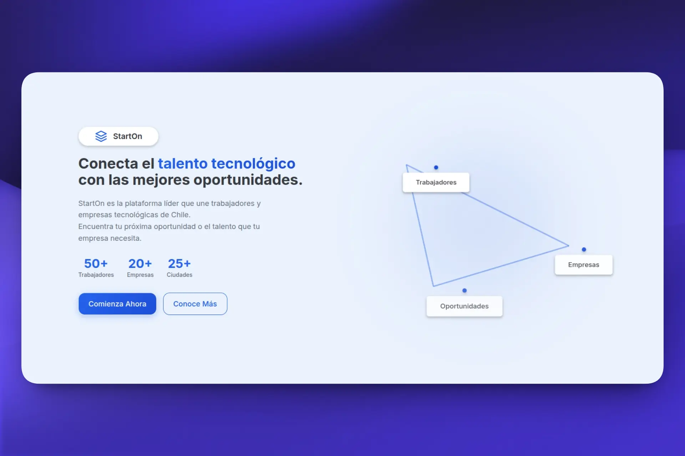

you
have
an
idea.
but
no
one
to
ship
it.
i
ship
them
.
i'm
franco
.
full-stack
engineer
·
based
in
argentina
selected work

starton
talent platform
mi agenda
booking · payments
ateevo
b2b fashion saas
tecnomar
industrial site
francoseiler
.com
available
for
new
work